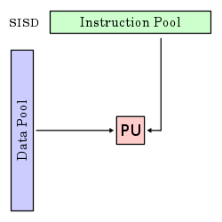

Scientific and parallel computing¶
``Computational science (also scientific computing or scientific computation (SC)) is a rapidly growing multidisciplinary field that uses advanced computing capabilities to understand and solve complex problems. It is an area of science which spans many disciplines, but at its core it involves the development of models and simulations to understand natural systems.’’ - Wikipedia
What are the applications?
Computational finance,
Computational biology,
Simulation of complex systems,
Network analysis
Multi-physics simulations,
Weather and climate models,
…
Why the need for parallelism?
“The complexity for minimum component costs has increased at a rate of roughly a factor of two per year. Certainly over the short term this rate can be expected to continue, if not to increase. Over the longer term, the rate of increase is a bit more uncertain, although there is no reason to believe it will not remain nearly constant for at least 10 years.” - G. Moore, 1975

Computers should reach the physical limits of Moore’s Law at some point in the 2020s… exponential functions saturates physical capabilities!
We are hitting the wall of single processor transistor count/computing capabilities,
Some applications needs more memory than the one that could be available on a single machine,
Optimization of sequential algorithms can bring us only to a certain extent
Therefore, we need
Algorithms that can work in parallel,
A communications protocol for parallel computation integrated with our programming languages
Parallel machines that can actually run this code
Flynn’s Taxonomy¶
Let us start from the bottom: the machines.
What is a parallel computer? … well, it can be a certain number of different “things”
Multi-core computing
Symmetric multiprocessing
Distributed computing
Cluster computing
Massively parallel computing
Grid computing
General-purpose computing on graphics processing units (GPGPU)
Vector processors
Let us abstract from the machine by describing Flynn’s taxonomy
SISD |
SIMD |
MISD |
MIMD |
|---|---|---|---|
 |
|
|
|
Single instruction stream, single data stream |
Single instruction stream, multiple data stream |
Multiple instruction stream, single data stream |
Multiple instruction stream, multiple data stream |


{kind=link}
Parallel Computers: our computer model¶
For our task of introducing parallel computations we need to fix a specific multiprocessor model, i.e., a specific generalization of the sequential RAM model in which there is more than one processor.
{kind=link}
Since we want to stay in a SIMD/MIMD model, we focus on a local memory machine model, i.e., a set of \(M\) processors each with its own local memory that are attached to a common communication network.
We can be more precise about the connection between processors, one can consider a network (a collection of switches connected by communication channels) and delve in a detailed way into its pattern of interconnection, i.e., into what is called the network topology.
An alternative is to summarize the network properties in terms of two parameters: latency and bandwidth
Latency the time it takes for a message to traverse the network;
Bandwidth the rate at which a processor can inject data into the network.
The TOP500 List¶
“… we have decided in 1993 to assemble and maintain a list of the 500 most powerful computer systems. Our list has been compiled twice a year since June 1993 with the help of high-performance computer experts, computational scientists, manufacturers, and the Internet community in general… In the present list (which we call the TOP500), we list computers ranked by their performance on the LINPACK Benchmark”
The LINPACK Benchmark.
Solution of a dense \(n\times n\) system of linear equations \(A\mathbf{x} = \mathbf{b}\), so that
\(\frac{\| A \mathbf{x} - \mathbf{b}\|}{\|A\|\|\mathbf{x}\| n \varepsilon} \leq O(1)\), for \(\varepsilon\) machine precision,
It uses a specialized right-looking LU factorization with look–ahead
Measuring
\(R_\text{max}\) the performance in GFLOPS for the largest problem run on a machine,
\(N_\text{max}\) the size of the largest problem run on a machine,
\(N_{1/2}\) the size where half the \(R_\text{max}\) execution rate is achieved,
\(R_{\text{peak}}\) the theoretical peak performance GFLOPS for the machine.
Parallel Algorithms¶
In a fairly general way we can say that a parallel algorithm is an algorithm which can do multiple operations in a given time.
Example. the sum of two vectors \(\mathbf{x}, \mathbf{y} \in \mathbb{R}^n\)
If we do the operation sequentially we do \(O(n)\) operations in \(T_n\)
If we split the operation among \(2\) processors, one summing up the entries between \(1,\ldots,i\), and one summing up the entries between \(i+1,\ldots,n\) we take \(T_i\) time for the first part and \(T_{n-i}\) time for the second, therefore the overall time is \(\max(T_{i},T_{n-i})\) for doing always \(O(n)\) operations.
Parallel Algorithms: speedup¶
Let us try to think again in an abstract way and to quantify the overall speed gain for a given gain in a subset of a process.
We break some process into \(N\) distinct portions with the \(i\)th portion occupying the \(P_i\) fraction of the overall completion time,
then we order such portion in such a way that the \(N\)th portions subsumes all the parts of the overall processes that have fixed costs.
The speedup of the \(i\)th portion can then be defined as
where the numerator and denominator are the original and optimized completion time.
Amdahl’s Law
Then the overall speedup for \(\mathbf{P} = (P_1,\ldots,P_N)\), \(\mathbf{S} = (S_1,\ldots,S_{N-1})\) is:
Let us make some observations on Amdahl’s Law
We are not assuming about whether the original completion time involves some optimization,
We are not making any assumption on what our optimization process is,
We are not even saying that the process in question involves a computer! Amdahl’s Law is a fairly general way of looking at how processes can be speed up by dividing them into sub-tasks with lower execution time.
Moreover, it fixes the theoretical maximum speedup in various scenarios.
If we allow all components \(S_i\) to grow unbounded then the upper bound on all scenario si \(S_{\text{max}} = 1/P_N\). Let us decline it in the context of the potential utility of parallel hardware.
Parallel Algorithms: Amdahl’s Law for parallel hardware¶
Consider now having a parallel machine that permits us dividing the execution of code across \(M\) hardware units, then the problem independent maximum speedup that such hardware can provide is \(M\).
Parallel Efficiency.
We define the parallel efficiency \(E\) as
where \(E = 100\%\) correspond to the maximal use of the available hardware. When \(S_{\text{max}} < M\), it is then impossible to take full advantage of all available execution units.
Goal: we require very large \(S_{\text{max}}\) and correspondingly tiny \(P_N\).
Warning
Every dusty corner of a code must scale, any portion that doesn’t becomes the rate-limiting step!
What we are neglecting and what we are tacitly assuming
We are neglecting \emph{overhead costs}, i.e., the cost associated with parallel execution such as
initializing (spawning) and joining of different computation threads,
communication between processes, data movement and memory allocation.
We considered also the ideal case in which \(S_i \rightarrow +\infty\) \(\forall i\), observe that with finite speedup on portions \(1\) through \(N-1\), the \(S_{\text{overall}}\) might continue to improve with increasing number of execution units.
We are assuming that the size of the problem remains fixed while the number of execution units increases, this is called the case of strong scalability. In some contexts, we need to turn instead to weak scalability in which the problem size grows proportionally to the number of execution units.